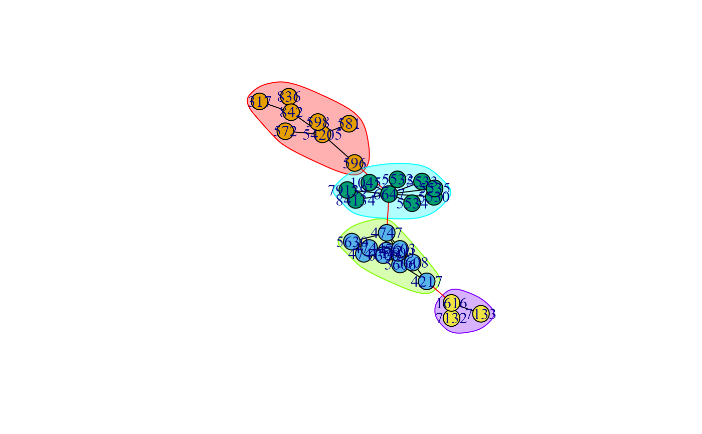
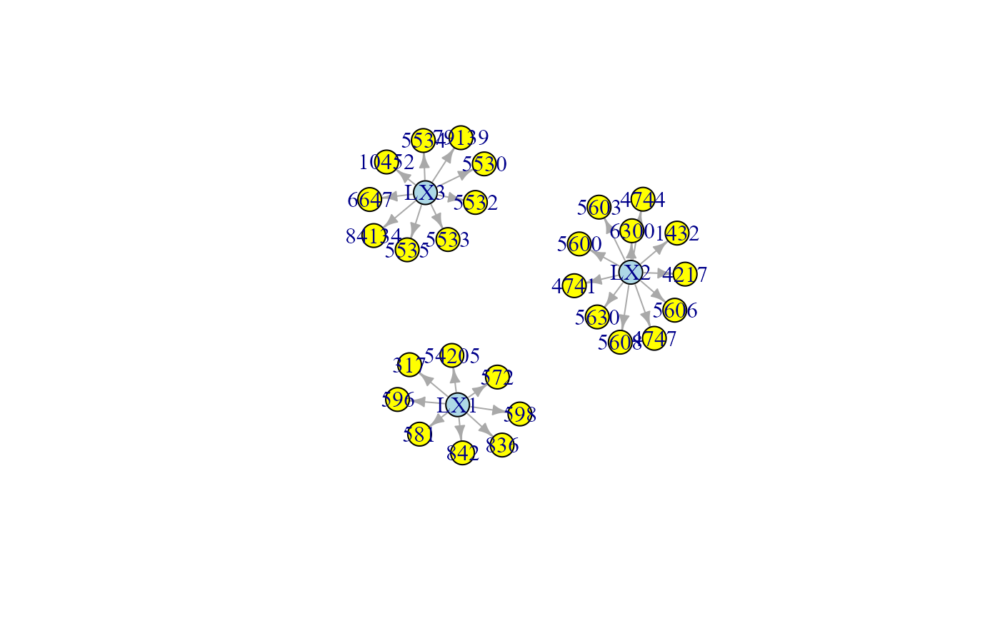
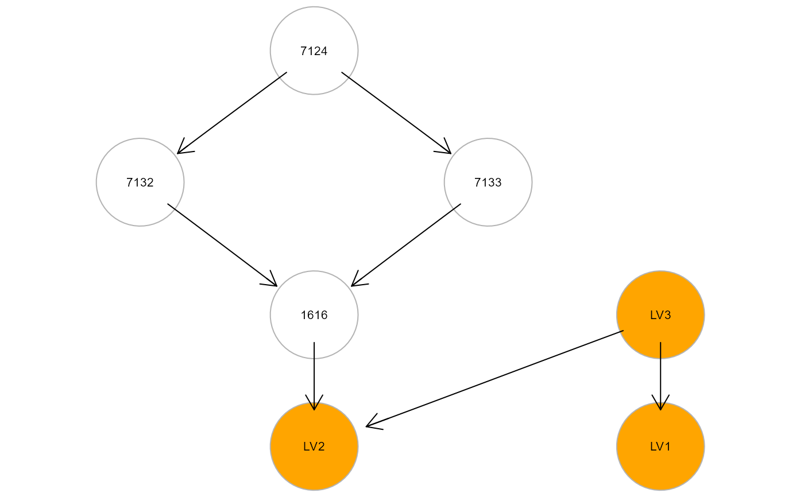

Generate factor scores, principal component scores, or projection scores of latent, composite, and unmeasured variable modules, respectively, and fit them in a SEM with exogenous group effect.
clusterScore(
graph,
data,
group,
HM = "LV",
type = "wtc",
size = 5,
verbose = FALSE,
...
)An igraph object.
A matrix or data.frame. Rows correspond to subjects, and columns to graph nodes.
A binary vector. This vector must be as long as the number of subjects. Each vector element must be 1 for cases and 0 for control subjects.
Hidden model type. For each defined hidden module:
(i) if HM = "LV", a latent variable (LV) will be defined as
common unknown cause acting on cluster nodes; (ii) if HM = "CV",
cluster nodes will be considered as regressors of a latent composite
variable (CV); (iii) if HM = "UV", an unmeasured variable (UV)
model will be generated for each module, where source nodes (i.e.,
in-degree = 0) act as common regressors influencing the other nodes
via an unmeasured variable.
By default, HM is set to "LV" (i.e., the latent variable model).
Graph clustering method. If type = "tahc", network
modules are generated using the tree agglomerative hierarchical
clustering method (Yu et al., 2015).
Other non-tree clustering methods from igraph package include: "wtc"
(default value; walktrap community structure with short random walks),
"ebc" (edge betweenness clustering), "fgc" (fast greedy method), "lbc"
(label propagation method), "lec" (leading eigenvector method), "loc"
(multi-level optimization), "opc" (optimal communiy structure), "sgc"
(spinglass statistical mechanics).
By default, the "wtc" method is used.
Minimum number of nodes per hidden module. By default, a minimum number of 5 nodes is required.
A logical value. If TRUE, intermediate graphs will be
displayed during the execution. In addition, a condensed graph with
clusters as nodes will be fitted and showed to screen (see also
mergeNodes). By default, verbode = FALSE.
Currently ignored.
A list of 3 objects:
"fit", hidden module fitting as a lavaan object;
"membership", hidden module nodes membership;
clusterGraph function;
"dataHM", hidden module data matrix with cluster scores.
Palluzzi F, Grassi M (2021). SEMgraph: An R Package for Causal Network Analysis of High-Throughput Data with Structural Equation Models. <arXiv:2103.08332>
See clusterGraph and cplot
for graph clustering, and factor.analysis for
factor analysis.
library(huge)
als.npn <- huge.npn(alsData$exprs)
#> Conducting the nonparanormal (npn) transformation via shrunkun ECDF....done.
C <- clusterScore(graph = alsData$graph, data = als.npn,
group = alsData$group,
HM = "LV",
type = "wtc",
verbose = TRUE)
#> modularity = 0.5286419
#>
#> Community sizes
#> 4 1 3 2
#> 3 8 9 11
#>


#> Model converged: TRUE
#> SRMR: 6.892669e-10
#>

#> NLMINB solver ended normally after 7 iterations
#>
#> deviance/df: 21.70615 srmr: 0.2334818
#>
#> Brown's combined P-value of node activation: 0.190154
#>
#> Brown's combined P-value of node inhibition: 8.026946e-05
#>
summary(C$fit)
#> lavaan 0.6-11 ended normally after 16 iterations
#>
#> Estimator ML
#> Optimization method NLMINB
#> Number of model parameters 9
#>
#> Number of observations 160
#>
#> Model Test User Model:
#>
#> Test statistic 0.000
#> Degrees of freedom 0
#>
#> Parameter Estimates:
#>
#> Standard errors Standard
#> Information Expected
#> Information saturated (h1) model Structured
#>
#> Regressions:
#> Estimate Std.Err z-value P(>|z|)
#> LV3 ~
#> group -0.848 0.251 -3.377 0.001
#> LV1 ~
#> group 0.869 0.226 3.847 0.000
#> LV2 ~
#> group -0.987 0.225 -4.382 0.000
#>
#> Covariances:
#> Estimate Std.Err z-value P(>|z|)
#> .LV3 ~~
#> .LV1 -0.201 0.083 -2.416 0.016
#> .LV2 0.787 0.103 7.667 0.000
#> .LV1 ~~
#> .LV2 -0.367 0.079 -4.650 0.000
#>
#> Variances:
#> Estimate Std.Err z-value P(>|z|)
#> .LV3 1.152 0.129 8.944 0.000
#> .LV1 0.930 0.104 8.944 0.000
#> .LV2 0.925 0.103 8.944 0.000
#>
head(C$dataHM)
#> group LV3 LV1 LV2
#> ALS2 1 -0.7989464 -0.7527118 -0.42868026
#> ALS3 1 -0.8635143 -0.8612364 -0.68134940
#> ALS4 1 0.9117982 -1.1961490 0.73949684
#> ALS5 1 -1.1279817 -0.2024923 -1.35460499
#> ALS6 1 -0.2946798 1.3716185 -0.07552589
#> ALS7 1 -1.7251688 0.4125732 -1.46126288
table(C$membership)
#>
#> 1 2 3
#> 8 11 9